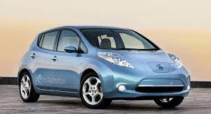
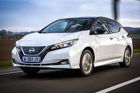

Оснащается электромобиль Ниссан Лиф 80-киловаттным мотором, мощностью 108 л. с., разгоняющим автомобиль до сотни за 10 секунд. Передняя подвеска электрокара является независимой, задний механизм – многорычажным. Ёмкость батареи, весом 300 кг (общий вес авто равняется 1650 кг), -24 кВт⋅ч: аккумулятор обеспечивает запас хода в 160 км. Максимальный пробег Ниссан Лиф на одном заряде не назовешь большим, но этого вполне хватает для поездок по городу: собственно, именно на жителей мегаполисов и ориентирован в первую очередь данный электромобиль. В 2015 году Ниссан Лиф получил новую 30-и киловатную батарею, что увеличило запас хода до 280 км.

Nissan Leaf (Ниссан Лиф) – электрический хэтчбек класса «С». Премьера второго поколения модели состоялась 5 сентября 2017 года сразу в двух странах – Японии (вблизи от Токио) и в США (Лас-Вегас). Продажи в Европе и Америке стартовали в январе 2018 года. Второе поколение модели автомобиля Leaf пытается держать высокую (для электрокара) планку продаж как за счет обновленного дизайна, так и с помощью новой «электроначинки». И если говорить о последней, то Leaf предлагает 40-киловаттную батарею (прежняя – 30 КВт/час), более мощный и моментный электромотор – 150 л. с. и 320 Нм против 109 сил и 254 номов соответственно. При том, что снаряженная масса автомобиля увеличился только на 19 кг (теперь 1535 кг), улучшились показатели запаса хода и разгона автомобиля: по европейскому циклу NEDC автомобиль может проехать на одной зарядке 378 км (однако если «мерять» по американскому циклу EPA – только 242 км), а разгон до «сотни» занимает теперь 9.8 с. Как и раньше, максимальная скорость хэтчбека ограничена электроникой на 144 км/час. Что же касается процесса зарядки, то от 50-киловаттного терминала батарею можно зарядить на 80 % процентов за 40 минут, а от домашней трехкиловаттной розетки батарея наполниться за 16 часов. Существенными также изменения во внешности автомобиля. Раньше круглый и «травоядный», теперь Ниссан Лиф выглядит остро и динамично. Дело в остром переднем обвесе, заглушке и черной V-образной линии вместо решетки радиатора, узких передних фарах. Но это далеко не все: капот, боковые кузовные панели получили острые штамповки, ниспадающая линия крыши заканчивается «невесомой» черной задней стойкой, задние фонари выполнены a-la Juke, есть даже задний диффузор. Кроме того, динамичности добавляет и двухцветный кузов (опция). Что касается салона, то здесь изменения не настолько ощутимы, но они тоже присутствуют: это полностью иной дизайн рулевого колеса, по-спортивному «сточенного» внизу, приборная панель с аналоговым спидометром и экраном для отображения информации, измененное оформление 7-дюймового сенсорного дисплея мультимедийной системы. Неординарный селектор трансмиссии остался прежним. Говоря о багажнике, стоит отметить его увеличенный размер: 435 литров против прежних 370-ти. Как и полагается хайтековому автомобилю, Nissan Leaf может похвастать рядом электронных систем, объединённых в целостный комплекс ProPilot. С его помощью электрокар может самостоятельно перемещаться в полосе (только по шоссе) – руки на руле держать не обязательно, а также самостоятельно парковаться (ProPilot Park). Еще одним нововведением является режим езды e-Pedal, который позволяет управлять автомобилем одной только педалью газа: чем сильнее нажата педаль, тем быстрее движется электрокар, а с отпусканием педали задействуется система рекуперации, «тормозящая» автомобиль вплоть до полной установки. Что же касается более привычных функций, то среди возможного оборудования есть датчики света и дождя, подогрев передних и задний сидений и руля, поддержка Apple CarPlay и Android Auto и аудиосистема на 6 динамиков, система кругового обзора, помощник при подъёме под гору, а также 6 подушек безопасности.